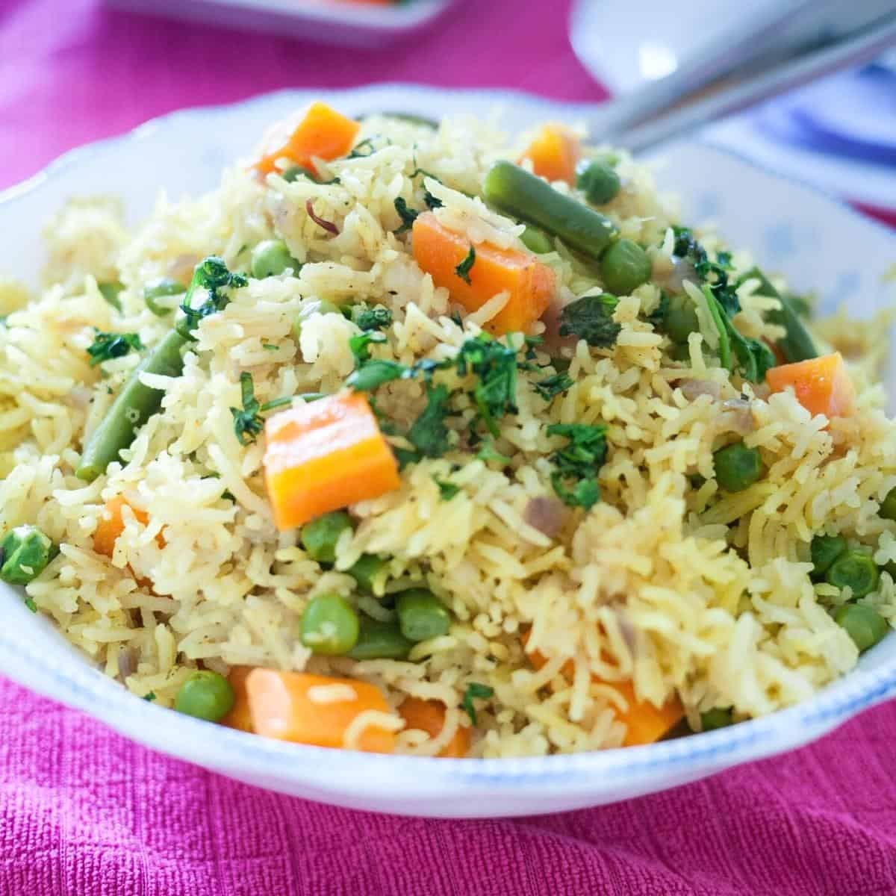

Ingredients
1/2 chopped onion
1 chopped garlic clove
1 chopped courgette
1 grated carrot
1 chopped red or yellow pepper
75g frozen peas
1/2 tin of chopped tomatoes
350ml Vegetable stock
150g Dried brown rice
1 tbsp of dried parsley
1 tsp tumeric
Seasoning
Method
Serves : Prep time 10 mins: cook time 5 mins
1)Add onion, garlic and tumeric to pan with a splash of veg stock
2)Stirring, cook gently for a 3 mins then add the chopped courgette, grated
carrot and chopped pepper
3)Stir well for a further 3 mins then add the dried rice
4)Stir rice in well with the vegetables
5)Once rice os distributed well throughout the mixture add the stockN leave to
boil
6)Once boiled immediately turn heat down to simmer and cover. Cook for 10
mins
7)Add in chopped tomatoes and frozen peas and stir
8)Cover and simmer for a further 10 mins
9)Once cooked stir in dried parsely with seasoning
10)Spoon rice into 2 dishes